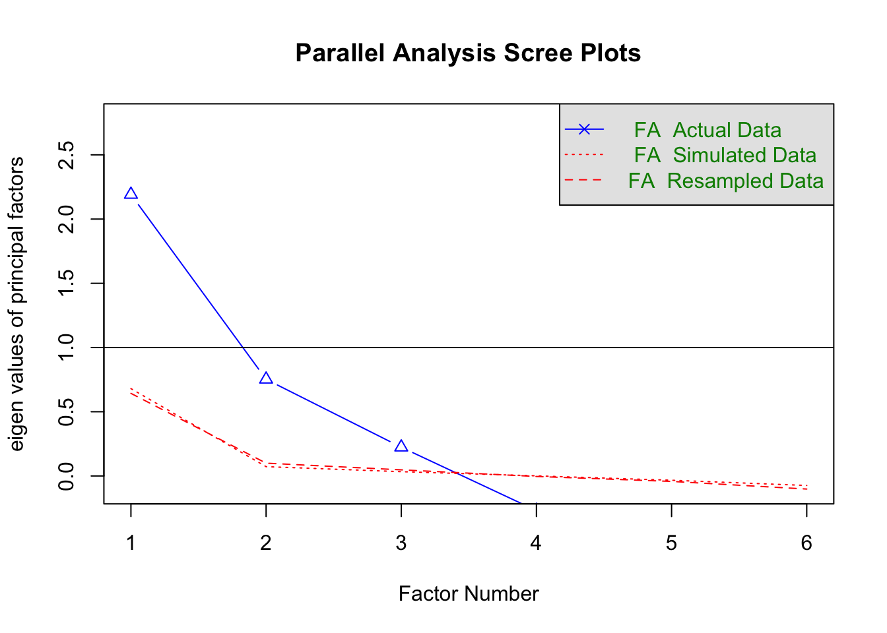

Chapter 5 Psychological predictors of carsharing per business model
library(psych)
library(haven)
library(tidyverse)
library(labelled)
library(brms)
library(knitr)
set.seed(3103)5.1 Importing the data
Selecting the relevant variables for this analysis.
Let’s convert everything to numeric to get rid of the labels and process some of the other variables
d2 <- as.data.frame(sapply(d1, as.numeric))
#gender
d2$gender <- na_if(d2$gender, 3)#there are only 3 cases of other
d2$gender<-as.character(d2$gender)
d2$gender <- dplyr::recode(d2$gender,
'1'='Male',
'2'='Female',
'3'='Other')
d2$gender <- as.factor(d2$gender)
#age
d2$age <- 2019 - d2$age
d2$age_c <- scale(d2$age)
#income
d2$income <- na_if(d2$income, 9)
d2$income <- as.character(d2$income)
income_order <-c('less_1000',
'1000_to_2000',
'2000_to_3000',
'3000_to_4000',
'4000_to_5000',
'greater_5000')
d2$income <- dplyr::recode(d2$income,
'1'='less_1000',
'2'='1000_to_2000',
'3'='2000_to_3000',
'4'='3000_to_4000',
'5'='4000_to_5000',
'6'='greater_5000')
d2$income <- factor(d2$income, levels = income_order, ordered = T)
#education
d2$education <- na_if(d2$education, 9)
d2$education <- as.character(d2$education)
education_order <-c('SecondarySchool_1',
'SecondarySchool_2',
'Highschool',
'University')
d2$education <- dplyr::recode(d2$education,
'1'='SecondarySchool_1',
'2'='SecondarySchool_2',
'3'='Highschool',
'4'='University')
d2$education <- factor(d2$education, levels = education_order, ordered = T)Finally let’s consider only the complete cases in the predictors
dropna_cols <-c(
#habits
'habit_q1',
'habit_q2',
'habit_q3',
'habit_q4',
'habit_q5',
'habit_q6',
'habit_q7',
'habit_q8',
#climate morality
'climate_q1',
'climate_q2',
'climate_q3',
'climate_q4',
'climate_q5',
#subjective norms
'subj_q1',
'subj_q2',
'subj_q3',
#trust
'trust_q1',
'trust_q2',
'trust_q3',
#control
'control_q1',
'control_q2',
'control_q3',
'control_q4',
'control_q5',
'control_q6',
#others
'age_c',
'income',
'education',
'gender'
)
d3 <- tidyr::drop_na(d2, tidyselect::any_of(dropna_cols))We moved from 1121 cases to 762 cases when selecting only complete cases there.
5.2 Factor analysis
To do a factor analysis with ordinal values we need to do a polychoric factor analysis or a non-linear FA. In this case we will do a polychoric factor analysis
5.2.1 Habits
Getting the scree plot
#Getting the polychoric correlation
habits_poly_cor <- polychoric(habits)
fa.parallel(habits, fa='fa', cor='poly')## Parallel analysis suggests that the number of factors = 4 and the number of components = NAShowing the loadings of the factor analysis
## Factor Analysis using method = ml
## Call: fa(r = habits, nfactors = 1, rotate = "none", fm = "mle", cor = "poly")
## Standardized loadings (pattern matrix) based upon correlation matrix
## ML1 h2 u2 com
## habit_q1 0.74 0.54 0.46 1
## habit_q2 0.64 0.41 0.59 1
## habit_q3 0.77 0.59 0.41 1
## habit_q4 0.81 0.65 0.35 1
## habit_q5 0.65 0.42 0.58 1
## habit_q6 0.50 0.25 0.75 1
## habit_q7 0.61 0.37 0.63 1
## habit_q8 0.69 0.48 0.52 1
##
## ML1
## SS loadings 3.70
## Proportion Var 0.46
##
## Mean item complexity = 1
## Test of the hypothesis that 1 factor is sufficient.
##
## The degrees of freedom for the null model are 28 and the objective function was 3.42 with Chi Square of 2577.99
## The degrees of freedom for the model are 20 and the objective function was 0.4
##
## The root mean square of the residuals (RMSR) is 0.07
## The df corrected root mean square of the residuals is 0.08
##
## The harmonic number of observations is 759 with the empirical chi square 180.47 with prob < 7.9e-28
## The total number of observations was 759 with Likelihood Chi Square = 298.63 with prob < 1.5e-51
##
## Tucker Lewis Index of factoring reliability = 0.847
## RMSEA index = 0.135 and the 90 % confidence intervals are 0.122 0.149
## BIC = 165.99
## Fit based upon off diagonal values = 0.98
## Measures of factor score adequacy
## ML1
## Correlation of (regression) scores with factors 0.94
## Multiple R square of scores with factors 0.89
## Minimum correlation of possible factor scores 0.775.2.2 Climate
Getting the scree plot
#Getting the polychoric correlation
climate_poly_cor <- polychoric(climate)
fa.parallel(climate, fa='fa', cor='poly')## Parallel analysis suggests that the number of factors = 2 and the number of components = NAShowing the loadings of the factor analysis
## Factor Analysis using method = ml
## Call: fa(r = climate, nfactors = 1, rotate = "none", fm = "mle", cor = "poly")
## Standardized loadings (pattern matrix) based upon correlation matrix
## ML1 h2 u2 com
## climate_q1 0.91 0.84 0.16 1
## climate_q2 0.86 0.74 0.26 1
## climate_q3 0.74 0.55 0.45 1
## climate_q4 0.64 0.41 0.59 1
## climate_q5 0.56 0.31 0.69 1
##
## ML1
## SS loadings 2.84
## Proportion Var 0.57
##
## Mean item complexity = 1
## Test of the hypothesis that 1 factor is sufficient.
##
## The degrees of freedom for the null model are 10 and the objective function was 3.12 with Chi Square of 2356.35
## The degrees of freedom for the model are 5 and the objective function was 0.69
##
## The root mean square of the residuals (RMSR) is 0.13
## The df corrected root mean square of the residuals is 0.19
##
## The harmonic number of observations is 759 with the empirical chi square 272.32 with prob < 8.9e-57
## The total number of observations was 759 with Likelihood Chi Square = 520.41 with prob < 3.1e-110
##
## Tucker Lewis Index of factoring reliability = 0.56
## RMSEA index = 0.369 and the 90 % confidence intervals are 0.342 0.396
## BIC = 487.25
## Fit based upon off diagonal values = 0.95
## Measures of factor score adequacy
## ML1
## Correlation of (regression) scores with factors 0.96
## Multiple R square of scores with factors 0.91
## Minimum correlation of possible factor scores 0.825.2.3 Subjective norms
Getting the scree plot
#Getting the polychoric correlation
subj_poly_cor <- polychoric(subj)
fa.parallel(subj, fa='fa', cor='poly')## Parallel analysis suggests that the number of factors = 1 and the number of components = NAShowing the loadings of the factor analysis
## Factor Analysis using method = ml
## Call: fa(r = subj, nfactors = 1, rotate = "none", fm = "mle", cor = "poly")
## Standardized loadings (pattern matrix) based upon correlation matrix
## ML1 h2 u2 com
## subj_q1 0.97 0.946 0.054 1
## subj_q2 0.95 0.910 0.090 1
## subj_q3 0.19 0.036 0.964 1
##
## ML1
## SS loadings 1.89
## Proportion Var 0.63
##
## Mean item complexity = 1
## Test of the hypothesis that 1 factor is sufficient.
##
## The degrees of freedom for the null model are 3 and the objective function was 2.01 with Chi Square of 1518.13
## The degrees of freedom for the model are 0 and the objective function was 0
##
## The root mean square of the residuals (RMSR) is 0
## The df corrected root mean square of the residuals is NA
##
## The harmonic number of observations is 759 with the empirical chi square 0 with prob < NA
## The total number of observations was 759 with Likelihood Chi Square = 0 with prob < NA
##
## Tucker Lewis Index of factoring reliability = -Inf
## Fit based upon off diagonal values = 1
## Measures of factor score adequacy
## ML1
## Correlation of (regression) scores with factors 0.98
## Multiple R square of scores with factors 0.97
## Minimum correlation of possible factor scores 0.935.2.4 Trust
Getting the scree plot
#Getting the polychoric correlation
trust_poly_cor <- polychoric(trust)
fa.parallel(trust, fa='fa', cor='poly')## Parallel analysis suggests that the number of factors = 1 and the number of components = NAShowing the loadings of the factor analysis
## Factor Analysis using method = ml
## Call: fa(r = trust, nfactors = 1, rotate = "none", fm = "mle", cor = "poly")
## Standardized loadings (pattern matrix) based upon correlation matrix
## ML1 h2 u2 com
## trust_q1 0.91 0.83 0.17 1
## trust_q2 0.92 0.85 0.15 1
## trust_q3 0.90 0.81 0.19 1
##
## ML1
## SS loadings 2.49
## Proportion Var 0.83
##
## Mean item complexity = 1
## Test of the hypothesis that 1 factor is sufficient.
##
## The degrees of freedom for the null model are 3 and the objective function was 2.57 with Chi Square of 1944.83
## The degrees of freedom for the model are 0 and the objective function was 0
##
## The root mean square of the residuals (RMSR) is 0
## The df corrected root mean square of the residuals is NA
##
## The harmonic number of observations is 759 with the empirical chi square 0 with prob < NA
## The total number of observations was 759 with Likelihood Chi Square = 0 with prob < NA
##
## Tucker Lewis Index of factoring reliability = -Inf
## Fit based upon off diagonal values = 1
## Measures of factor score adequacy
## ML1
## Correlation of (regression) scores with factors 0.97
## Multiple R square of scores with factors 0.94
## Minimum correlation of possible factor scores 0.875.2.5 Control
Getting the scree plot
#Getting the polychoric correlation
control_poly_cor <- polychoric(control)
fa.parallel(control, fa='fa', cor='poly')
## Parallel analysis suggests that the number of factors = 3 and the number of components = NAShowing the loadings of the factor analysis
## Factor Analysis using method = ml
## Call: fa(r = control, nfactors = 1, rotate = "none", fm = "mle", cor = "poly")
## Standardized loadings (pattern matrix) based upon correlation matrix
## ML1 h2 u2 com
## control_q1 0.95 0.910 0.090 1
## control_q2 0.96 0.917 0.083 1
## control_q3 0.32 0.101 0.899 1
## control_q4 0.34 0.116 0.884 1
## control_q5 0.24 0.055 0.945 1
## control_q6 -0.22 0.047 0.953 1
##
## ML1
## SS loadings 2.15
## Proportion Var 0.36
##
## Mean item complexity = 1
## Test of the hypothesis that 1 factor is sufficient.
##
## The degrees of freedom for the null model are 15 and the objective function was 2.97 with Chi Square of 2245.18
## The degrees of freedom for the model are 9 and the objective function was 0.86
##
## The root mean square of the residuals (RMSR) is 0.22
## The df corrected root mean square of the residuals is 0.28
##
## The harmonic number of observations is 759 with the empirical chi square 1088.58 with prob < 1.3e-228
## The total number of observations was 759 with Likelihood Chi Square = 648.57 with prob < 7.8e-134
##
## Tucker Lewis Index of factoring reliability = 0.522
## RMSEA index = 0.306 and the 90 % confidence intervals are 0.286 0.326
## BIC = 588.88
## Fit based upon off diagonal values = 0.7
## Measures of factor score adequacy
## ML1
## Correlation of (regression) scores with factors 0.98
## Multiple R square of scores with factors 0.96
## Minimum correlation of possible factor scores 0.915.2.6 Table for the Lambda’s
habits_lambda <- psych::guttman(habits_poly_cor$rho)
climate_lambda <- psych::guttman(climate_poly_cor$rho)
subj_lambda <- psych::guttman(subj_poly_cor$rho)
trust_lambda <- psych::guttman(trust_poly_cor$rho)
control_lambda <- psych::guttman(control_poly_cor$rho)
lambda <- data.frame(Lambda=c("Chronbach's Alpha (Lambda 3)", "Lambda 4"),
Habits = c(habits_lambda$lambda.3, habits_lambda$lambda.4),
Climate = c(climate_lambda$lambda.3, climate_lambda$lambda.4),
"Subjective" = c(subj_lambda$lambda.3, subj_lambda$lambda.4),
Trust = c(trust_lambda$lambda.3, trust_lambda$lambda.4),
Control = c(control_lambda$lambda.3, control_lambda$lambda.4))lambda %>% kable(caption="Values of the Lambda 3 and Lambda 4 of Guttman for the psychological predictors",
digits = 2,
format='html',
booktabs=T,
label="rq4-lambda")| Lambda | Habits | Climate | Subjective | Trust | Control |
|---|---|---|---|---|---|
| Chronbach’s Alpha (Lambda 3) | 0.87 | 0.87 | 0.69 | 0.94 | 0.58 |
| Lambda 4 | 0.91 | 0.90 | 0.80 | 0.84 | 0.89 |
5.2.7 Adding the FA scores to data frame
Now we need to add to the data frame the actual scores obtained by the FA
add_scores_to_df <- function(df, fa_model,name){
scores<- as.data.frame(fa_model$scores)
n <- ncol(scores)
names_col<-NULL
if(n>1)
names_col <- paste(rep('fa_', n),
rep(name, n),
seq(1,n),
sep = "")
else
names_col <- paste('fa_',name,sep="")
colnames(scores) <- names_col
out <- cbind(df,scores)
return(out)
}5.3 Analysis and models
Now we are going to do the same analysis for each car sharing type company
We are using the same weakly informative priors for all models. For the monotonic predictors we are using the default priors where the distance is the same between each item in the income and education scale
priors<-c(set_prior("normal(0,5)", class = "b", coef = "fa_habits"),
set_prior("normal(0,5)", class = "b", coef = "fa_climate"),
set_prior("normal(0,5)", class = "b", coef = "fa_subj"),
set_prior("normal(0,5)", class = "b", coef = "fa_trust"),
set_prior("normal(0,5)", class = "b", coef = "fa_control"),
set_prior("normal(0,5)", class = "b", coef = "age_c"),
set_prior("normal(0,5)", class = "b", coef = "genderMale"))
priors0<-c(set_prior("normal(0,5)", class = "b", coef = "age_c"),
set_prior("normal(0,5)", class = "b", coef = "genderMale"))5.3.1 FF
d_ff <- d4 %>%
select(FF,
starts_with('fa'),
age_c,
gender,
education,
income) %>%
drop_na()
d_ff$FF <- as.ordered(d_ff$FF)Ordinal regression with monotonic predictors
m_ff <- brm(FF ~ fa_habits + fa_climate + fa_subj + fa_trust + fa_control + gender + mo(income) + age_c + mo(education),
data = d_ff,
prior = priors,
family = cumulative(),
cores=4
)
m_ff0 <- brm(FF ~ gender + mo(income) + age_c + mo(education),
data = d_ff,
prior = priors0,
family = cumulative(),
cores=4
)
saveRDS(m_ff0, 'models/m_ff0.RDS')
saveRDS(m_ff, 'models/m_ff.RDS')Now we can get the summary of the model
## Family: cumulative
## Links: mu = logit; disc = identity
## Formula: FF ~ fa_habits + fa_climate + fa_subj + fa_trust + fa_control + gender + mo(income) + age_c + mo(education)
## Data: d_ff (Number of observations: 557)
## Samples: 4 chains, each with iter = 2000; warmup = 1000; thin = 1;
## total post-warmup samples = 4000
##
## Population-Level Effects:
## Estimate Est.Error l-95% CI u-95% CI Rhat Bulk_ESS Tail_ESS
## Intercept[1] -3.11 0.53 -4.04 -1.86 1.00 1509 1290
## Intercept[2] -1.49 0.52 -2.36 -0.26 1.00 1566 1399
## Intercept[3] -0.63 0.52 -1.50 0.62 1.00 1560 1350
## Intercept[4] -0.33 0.52 -1.19 0.92 1.00 1545 1335
## fa_habits -0.47 0.09 -0.64 -0.30 1.00 4791 3233
## fa_climate -0.05 0.09 -0.21 0.12 1.00 4281 3031
## fa_subj -0.01 0.09 -0.20 0.17 1.00 4740 2996
## fa_trust 0.13 0.10 -0.07 0.32 1.00 4125 3084
## fa_control -0.55 0.09 -0.73 -0.37 1.00 4246 3221
## genderMale -0.37 0.17 -0.71 -0.03 1.00 4448 2973
## age_c 0.57 0.10 0.38 0.77 1.00 4618 3072
## moincome -0.10 0.06 -0.21 0.02 1.00 3328 2603
## moeducation 0.04 0.18 -0.26 0.48 1.00 1444 1219
##
## Simplex Parameters:
## Estimate Est.Error l-95% CI u-95% CI Rhat Bulk_ESS Tail_ESS
## moincome1[1] 0.16 0.14 0.00 0.51 1.00 4038 2233
## moincome1[2] 0.14 0.12 0.00 0.47 1.00 4071 1642
## moincome1[3] 0.16 0.14 0.00 0.51 1.00 4349 2001
## moincome1[4] 0.25 0.18 0.01 0.63 1.00 4505 2696
## moincome1[5] 0.28 0.19 0.01 0.69 1.00 4851 2742
## moeducation1[1] 0.44 0.27 0.02 0.92 1.00 1857 2159
## moeducation1[2] 0.30 0.23 0.01 0.82 1.00 2612 2266
## moeducation1[3] 0.26 0.22 0.01 0.78 1.00 2912 2943
##
## Family Specific Parameters:
## Estimate Est.Error l-95% CI u-95% CI Rhat Bulk_ESS Tail_ESS
## disc 1.00 0.00 1.00 1.00 1.00 4000 4000
##
## Samples were drawn using sampling(NUTS). For each parameter, Bulk_ESS
## and Tail_ESS are effective sample size measures, and Rhat is the potential
## scale reduction factor on split chains (at convergence, Rhat = 1).5.3.1.1 Comparing the two models
##
## Computed from 4000 by 557 log-likelihood matrix
##
## Estimate SE
## elpd_waic -737.8 17.9
## p_waic 14.0 0.6
## waic 1475.6 35.8##
## Computed from 4000 by 557 log-likelihood matrix
##
## Estimate SE
## elpd_waic -766.8 16.0
## p_waic 8.9 0.4
## waic 1533.7 32.1


5.3.2 RTSB_A
d_rtsba <- d4 %>%
select(RTSB_A,
starts_with('fa'),
age_c,
gender,
education,
income) %>%
drop_na()
d_rtsba$RTSB_A <- as.ordered(d_rtsba$RTSB_A)Ordinal regression with monotonic predictors
m_rtsba <- brm(RTSB_A ~ fa_habits + fa_climate + fa_subj + fa_trust + fa_control + gender + mo(income) + age_c + mo(education),
data = d_rtsba,
prior = priors,
family = cumulative(),
cores=4
)
saveRDS(m_rtsba, 'models/m_rtsba.RDS')
m_rtsba0 <- brm(RTSB_A ~ gender + mo(income) + age_c + mo(education),
data = d_rtsba,
prior = priors0,
family = cumulative(),
cores=4
)
saveRDS(m_rtsba0, 'models/m_rtsba0.RDS')Now we can get the summary of the model
## Family: cumulative
## Links: mu = logit; disc = identity
## Formula: RTSB_A ~ fa_habits + fa_climate + fa_subj + fa_trust + fa_control + gender + mo(income) + age_c + mo(education)
## Data: d_rtsba (Number of observations: 181)
## Samples: 4 chains, each with iter = 2000; warmup = 1000; thin = 1;
## total post-warmup samples = 4000
##
## Population-Level Effects:
## Estimate Est.Error l-95% CI u-95% CI Rhat Bulk_ESS Tail_ESS
## Intercept[1] -4.38 0.91 -6.27 -2.70 1.00 2858 2544
## Intercept[2] -2.77 0.85 -4.56 -1.19 1.00 2953 2770
## Intercept[3] -1.94 0.83 -3.67 -0.37 1.00 3019 2763
## Intercept[4] -1.53 0.83 -3.26 -0.01 1.00 2940 2680
## fa_habits 0.73 0.23 0.30 1.19 1.00 6025 3130
## fa_climate -0.07 0.23 -0.53 0.38 1.00 4635 3271
## fa_subj -0.33 0.19 -0.72 0.03 1.00 4852 3051
## fa_trust 0.02 0.21 -0.38 0.42 1.00 4876 2956
## fa_control -0.85 0.20 -1.26 -0.46 1.00 5395 2919
## genderMale 0.32 0.38 -0.44 1.06 1.00 5387 3013
## age_c -0.84 0.19 -1.22 -0.47 1.00 5067 2885
## moincome -0.01 0.19 -0.32 0.44 1.00 2329 2409
## moeducation -0.47 0.28 -1.05 0.04 1.00 2902 2605
##
## Simplex Parameters:
## Estimate Est.Error l-95% CI u-95% CI Rhat Bulk_ESS Tail_ESS
## moincome1[1] 0.25 0.22 0.01 0.77 1.00 2761 2479
## moincome1[2] 0.18 0.15 0.00 0.57 1.00 5176 2203
## moincome1[3] 0.20 0.17 0.01 0.62 1.00 4002 2622
## moincome1[4] 0.18 0.15 0.01 0.57 1.00 5357 3045
## moincome1[5] 0.20 0.16 0.01 0.61 1.00 4471 3077
## moeducation1[1] 0.27 0.20 0.01 0.73 1.00 4755 2735
## moeducation1[2] 0.35 0.23 0.01 0.84 1.00 4532 2190
## moeducation1[3] 0.38 0.22 0.02 0.84 1.00 3849 2140
##
## Family Specific Parameters:
## Estimate Est.Error l-95% CI u-95% CI Rhat Bulk_ESS Tail_ESS
## disc 1.00 0.00 1.00 1.00 1.00 4000 4000
##
## Samples were drawn using sampling(NUTS). For each parameter, Bulk_ESS
## and Tail_ESS are effective sample size measures, and Rhat is the potential
## scale reduction factor on split chains (at convergence, Rhat = 1).5.3.2.1 Comparing the two models
##
## Computed from 4000 by 181 log-likelihood matrix
##
## Estimate SE
## elpd_waic -176.6 14.2
## p_waic 14.6 1.6
## waic 353.3 28.4
##
## 3 (1.7%) p_waic estimates greater than 0.4. We recommend trying loo instead.##
## Computed from 4000 by 181 log-likelihood matrix
##
## Estimate SE
## elpd_waic -189.8 13.7
## p_waic 8.6 0.8
## waic 379.5 27.4
##
## 1 (0.6%) p_waic estimates greater than 0.4. We recommend trying loo instead.


5.3.3 RTSB_B
d_rtsbb <- d4 %>%
select(RTSB_B,
starts_with('fa'),
age_c,
gender,
education,
income) %>%
drop_na()
d_rtsbb$RTSB_B <- as.ordered(d_rtsbb$RTSB_B)Ordinal regression with monotonic predictors
m_rtsbb <- brm(RTSB_B ~ fa_habits + fa_climate + fa_subj + fa_trust + fa_control + gender + mo(income) + age_c + mo(education),
data = d_rtsbb,
prior = priors,
family = cumulative(),
cores=4
)
saveRDS(m_rtsbb, 'models/m_rtsbb.RDS')
m_rtsbb0 <- brm(RTSB_B ~ gender + mo(income) + age_c + mo(education),
data = d_rtsbb,
prior = priors0,
family = cumulative(),
cores=4
)
saveRDS(m_rtsbb0, 'models/m_rtsbb0.RDS')Now we can get the summary of the model
## Family: cumulative
## Links: mu = logit; disc = identity
## Formula: RTSB_B ~ fa_habits + fa_climate + fa_subj + fa_trust + fa_control + gender + mo(income) + age_c + mo(education)
## Data: d_rtsbb (Number of observations: 395)
## Samples: 4 chains, each with iter = 2000; warmup = 1000; thin = 1;
## total post-warmup samples = 4000
##
## Population-Level Effects:
## Estimate Est.Error l-95% CI u-95% CI Rhat Bulk_ESS Tail_ESS
## Intercept[1] -3.99 0.61 -5.26 -2.85 1.00 2038 1770
## Intercept[2] -1.63 0.57 -2.88 -0.58 1.00 2208 1749
## Intercept[3] -0.74 0.56 -1.99 0.30 1.00 2239 1789
## Intercept[4] -0.49 0.56 -1.73 0.56 1.00 2262 1814
## fa_habits 0.31 0.12 0.08 0.54 1.00 4955 2809
## fa_climate -0.08 0.12 -0.31 0.16 1.00 4575 2724
## fa_subj -0.12 0.11 -0.35 0.10 1.00 4896 3156
## fa_trust -0.34 0.12 -0.58 -0.10 1.00 5227 2938
## fa_control -0.15 0.10 -0.35 0.05 1.00 6011 3230
## genderMale -0.19 0.20 -0.57 0.20 1.00 5634 3248
## age_c -0.43 0.12 -0.65 -0.19 1.00 4273 2912
## moincome -0.07 0.08 -0.21 0.09 1.00 3785 2621
## moeducation -0.15 0.20 -0.58 0.23 1.00 1948 1586
##
## Simplex Parameters:
## Estimate Est.Error l-95% CI u-95% CI Rhat Bulk_ESS Tail_ESS
## moincome1[1] 0.22 0.17 0.01 0.62 1.00 4658 2247
## moincome1[2] 0.19 0.16 0.01 0.57 1.00 5588 2388
## moincome1[3] 0.23 0.17 0.01 0.63 1.00 3949 2271
## moincome1[4] 0.17 0.14 0.01 0.52 1.00 4960 2594
## moincome1[5] 0.19 0.15 0.01 0.57 1.00 6145 2786
## moeducation1[1] 0.38 0.24 0.02 0.86 1.00 3664 2567
## moeducation1[2] 0.26 0.21 0.01 0.77 1.00 4411 2886
## moeducation1[3] 0.36 0.24 0.01 0.86 1.00 3816 2917
##
## Family Specific Parameters:
## Estimate Est.Error l-95% CI u-95% CI Rhat Bulk_ESS Tail_ESS
## disc 1.00 0.00 1.00 1.00 1.00 4000 4000
##
## Samples were drawn using sampling(NUTS). For each parameter, Bulk_ESS
## and Tail_ESS are effective sample size measures, and Rhat is the potential
## scale reduction factor on split chains (at convergence, Rhat = 1).5.3.3.1 Comparing the two models
##
## Computed from 4000 by 395 log-likelihood matrix
##
## Estimate SE
## elpd_waic -510.8 14.8
## p_waic 14.4 0.8
## waic 1021.6 29.6##
## Computed from 4000 by 395 log-likelihood matrix
##
## Estimate SE
## elpd_waic -522.0 13.5
## p_waic 8.5 0.4
## waic 1044.1 27.0


5.3.4 COMB
d_comb <- d4 %>%
select(COMB,
starts_with('fa'),
age_c,
gender,
education,
income) %>%
drop_na()
d_comb$COMB <- as.ordered(d_comb$COMB)Ordinal regression with monotonic predictors
m_comb <- brm(COMB ~ fa_habits + fa_climate + fa_subj + fa_trust + fa_control + gender + mo(income) + age_c + mo(education),
data = d_comb,
prior = priors,
family = cumulative(),
cores=4
)
saveRDS(m_comb, 'models/m_comb.RDS')
m_comb0 <- brm(COMB ~ gender + mo(income) + age_c + mo(education),
data = d_comb,
prior = priors0,
family = cumulative(),
cores=4
)
saveRDS(m_comb0, 'models/m_comb0.RDS')Now we can get the summary of the model
## Family: cumulative
## Links: mu = logit; disc = identity
## Formula: COMB ~ fa_habits + fa_climate + fa_subj + fa_trust + fa_control + gender + mo(income) + age_c + mo(education)
## Data: d_comb (Number of observations: 235)
## Samples: 4 chains, each with iter = 2000; warmup = 1000; thin = 1;
## total post-warmup samples = 4000
##
## Population-Level Effects:
## Estimate Est.Error l-95% CI u-95% CI Rhat Bulk_ESS Tail_ESS
## Intercept[1] -1.72 0.91 -3.39 0.18 1.00 2148 2368
## Intercept[2] 0.03 0.90 -1.65 1.93 1.00 2070 2290
## Intercept[3] 0.76 0.91 -0.90 2.68 1.00 2106 2144
## Intercept[4] 1.14 0.91 -0.51 3.05 1.00 2093 2245
## fa_habits 0.05 0.15 -0.24 0.35 1.00 4750 3084
## fa_climate -0.19 0.14 -0.46 0.06 1.00 4216 3091
## fa_subj -0.01 0.14 -0.27 0.27 1.00 4315 2678
## fa_trust -0.19 0.16 -0.50 0.13 1.00 4042 2901
## fa_control -0.29 0.13 -0.55 -0.03 1.00 3573 2668
## genderMale 0.11 0.25 -0.39 0.60 1.00 4344 2834
## age_c -0.06 0.13 -0.32 0.20 1.00 4897 3052
## moincome -0.26 0.13 -0.54 -0.05 1.00 2828 2345
## moeducation 0.43 0.34 -0.18 1.12 1.00 1837 2337
##
## Simplex Parameters:
## Estimate Est.Error l-95% CI u-95% CI Rhat Bulk_ESS Tail_ESS
## moincome1[1] 0.23 0.17 0.01 0.62 1.00 2586 1682
## moincome1[2] 0.31 0.18 0.02 0.67 1.00 3204 1734
## moincome1[3] 0.18 0.14 0.01 0.54 1.00 3737 2207
## moincome1[4] 0.13 0.11 0.00 0.41 1.00 3962 2429
## moincome1[5] 0.15 0.12 0.01 0.45 1.00 4476 2881
## moeducation1[1] 0.49 0.26 0.03 0.93 1.00 2946 2231
## moeducation1[2] 0.37 0.24 0.02 0.87 1.00 3449 2564
## moeducation1[3] 0.14 0.17 0.00 0.64 1.00 2171 2480
##
## Family Specific Parameters:
## Estimate Est.Error l-95% CI u-95% CI Rhat Bulk_ESS Tail_ESS
## disc 1.00 0.00 1.00 1.00 1.00 4000 4000
##
## Samples were drawn using sampling(NUTS). For each parameter, Bulk_ESS
## and Tail_ESS are effective sample size measures, and Rhat is the potential
## scale reduction factor on split chains (at convergence, Rhat = 1).5.3.4.1 Comparing the two models
##
## Computed from 4000 by 235 log-likelihood matrix
##
## Estimate SE
## elpd_waic -355.5 8.5
## p_waic 15.9 1.0
## waic 711.0 17.0
##
## 2 (0.9%) p_waic estimates greater than 0.4. We recommend trying loo instead.##
## Computed from 4000 by 235 log-likelihood matrix
##
## Estimate SE
## elpd_waic -356.2 7.6
## p_waic 9.5 0.6
## waic 712.3 15.1


5.3.5 P2P
d_p2p <- d4 %>%
select(P2P,
starts_with('fa'),
age_c,
gender,
education,
income) %>%
drop_na()
d_p2p$P2P <- as.ordered(d_p2p$P2P)Ordinal regression with monotonic predictors
m_p2p <- brm(P2P ~ fa_habits + fa_climate + fa_subj + fa_trust + fa_control + gender + mo(income) + age_c + mo(education),
data = d_p2p,
prior = priors,
family = cumulative(),
cores=4
)
saveRDS(m_p2p, 'models/m_p2p.RDS')
m_p2p0 <- brm(P2P ~ gender + mo(income) + age_c + mo(education),
data = d_p2p,
prior = priors0,
family = cumulative(),
cores=4
)
saveRDS(m_p2p0, 'models/m_p2p0.RDS')Now we can get the summary of the model
## Family: cumulative
## Links: mu = logit; disc = identity
## Formula: P2P ~ fa_habits + fa_climate + fa_subj + fa_trust + fa_control + gender + mo(income) + age_c + mo(education)
## Data: d_p2p (Number of observations: 493)
## Samples: 4 chains, each with iter = 2000; warmup = 1000; thin = 1;
## total post-warmup samples = 4000
##
## Population-Level Effects:
## Estimate Est.Error l-95% CI u-95% CI Rhat Bulk_ESS Tail_ESS
## Intercept[1] -3.60 0.75 -5.14 -2.15 1.00 2061 2510
## Intercept[2] -1.35 0.52 -2.27 -0.23 1.00 2529 2776
## Intercept[3] 0.48 0.50 -0.39 1.57 1.00 2507 2658
## Intercept[4] 1.00 0.50 0.11 2.08 1.00 2503 2704
## fa_habits -0.14 0.10 -0.34 0.07 1.00 3303 2611
## fa_climate 0.07 0.11 -0.14 0.28 1.00 3652 3078
## fa_subj -0.14 0.12 -0.38 0.09 1.00 3202 2620
## fa_trust 0.05 0.10 -0.15 0.26 1.00 3720 3264
## fa_control 0.31 0.11 0.10 0.54 1.00 3327 2510
## genderMale -0.10 0.21 -0.52 0.33 1.00 3587 3067
## age_c 0.17 0.11 -0.04 0.41 1.00 3898 3010
## moincome 0.35 0.09 0.19 0.53 1.00 3117 2355
## moeducation 0.50 0.16 0.22 0.85 1.00 2335 2346
##
## Simplex Parameters:
## Estimate Est.Error l-95% CI u-95% CI Rhat Bulk_ESS Tail_ESS
## moincome1[1] 0.10 0.08 0.00 0.30 1.00 2987 1866
## moincome1[2] 0.14 0.09 0.01 0.35 1.00 2985 1635
## moincome1[3] 0.15 0.11 0.01 0.41 1.00 3463 1693
## moincome1[4] 0.34 0.17 0.04 0.68 1.00 4161 2626
## moincome1[5] 0.27 0.16 0.02 0.61 1.00 3644 1977
## moeducation1[1] 0.32 0.19 0.02 0.69 1.00 2430 1956
## moeducation1[2] 0.47 0.20 0.09 0.86 1.00 3195 2519
## moeducation1[3] 0.20 0.14 0.01 0.56 1.00 4021 2399
##
## Family Specific Parameters:
## Estimate Est.Error l-95% CI u-95% CI Rhat Bulk_ESS Tail_ESS
## disc 1.00 0.00 1.00 1.00 1.00 4000 4000
##
## Samples were drawn using sampling(NUTS). For each parameter, Bulk_ESS
## and Tail_ESS are effective sample size measures, and Rhat is the potential
## scale reduction factor on split chains (at convergence, Rhat = 1).5.3.5.1 Comparing the two models
##
## Computed from 4000 by 493 log-likelihood matrix
##
## Estimate SE
## elpd_waic -447.0 22.2
## p_waic 15.5 1.2
## waic 893.9 44.4
##
## 3 (0.6%) p_waic estimates greater than 0.4. We recommend trying loo instead.##
## Computed from 4000 by 493 log-likelihood matrix
##
## Estimate SE
## elpd_waic -448.0 21.9
## p_waic 10.1 0.9
## waic 896.1 43.7
##
## 2 (0.4%) p_waic estimates greater than 0.4. We recommend trying loo instead.


5.4 Figures for the paper
5.4.1 Habits panel
habits_ff <- plot(conditional_effects(m_ff, effects="fa_habits",categorical = T))[[1]] +
coord_cartesian(ylim = c(0,1)) +
labs(x="Habits",
title = "FF",
fill = "Response",
colour = "Response")+
theme(axis.title.x=element_blank())
habits_rtsba <- plot(conditional_effects(m_rtsba, effects="fa_habits",categorical = T))[[1]] +
coord_cartesian(ylim = c(0,1)) +
labs(x="Habits",
title = "RTSB_A",
fill = "Response",
colour = "Response")+
theme(axis.title.x=element_blank(),
axis.text.y = element_blank(),
axis.title.y=element_blank())
habits_rtsbb <- plot(conditional_effects(m_rtsbb, effects="fa_habits",categorical = T))[[1]]+
coord_cartesian(ylim = c(0,1)) +
labs(x="Habits",
title = "RTSB_B",
fill = "Response",
colour = "Response") +
theme(axis.title.y=element_blank(),
axis.text.y = element_blank())
habits_comb <- plot(conditional_effects(m_comb, effects="fa_habits",categorical = T))[[1]]+
coord_cartesian(ylim = c(0,1)) +
labs(x="Habits",
title = "COMB",
fill = "Response",
colour = "Response")+
theme(axis.title.x=element_blank(),
axis.text.y = element_blank(),
axis.title.y=element_blank())
habits_p2p <- plot(conditional_effects(m_p2p, effects="fa_habits",categorical = T))[[1]]+
coord_cartesian(ylim = c(0,1)) +
labs(x="Habits",
title = "P2P",
fill = "Response",
colour = "Response") +
theme(axis.title.x=element_blank(),
axis.text.y = element_blank(),
axis.title.y=element_blank())
5.4.2 Climate panel
climate_ff <- plot(conditional_effects(m_ff, effects="fa_climate",categorical = T))[[1]] +
coord_cartesian(ylim = c(0,1)) +
labs(x="Climate",
fill = "Response",
colour = "Response")+
theme(axis.title.x=element_blank(),
plot.title = element_blank(),)
climate_rtsba <- plot(conditional_effects(m_rtsba, effects="fa_climate",categorical = T))[[1]] +
coord_cartesian(ylim = c(0,1)) +
labs(x="Climate",
fill = "Response",
colour = "Response")+
theme(axis.title.x=element_blank(),
axis.text.y = element_blank(),
plot.title = element_blank(),
axis.title.y=element_blank())
climate_rtsbb <- plot(conditional_effects(m_rtsbb, effects="fa_climate",categorical = T))[[1]]+
coord_cartesian(ylim = c(0,1)) +
labs(x="Climate",
fill = "Response",
colour = "Response") +
theme(axis.title.y=element_blank(),
plot.title = element_blank(),
axis.text.y = element_blank())
climate_comb <- plot(conditional_effects(m_comb, effects="fa_climate",categorical = T))[[1]]+
coord_cartesian(ylim = c(0,1)) +
labs(x="Climate",
fill = "Response",
colour = "Response")+
theme(axis.title.x=element_blank(),
plot.title = element_blank(),
axis.text.y = element_blank(),
axis.title.y=element_blank())
climate_p2p <- plot(conditional_effects(m_p2p, effects="fa_climate",categorical = T))[[1]]+
coord_cartesian(ylim = c(0,1)) +
labs(x="Climate",
fill = "Response",
colour = "Response") +
theme(axis.title.x=element_blank(),
plot.title = element_blank(),
axis.text.y = element_blank(),
axis.title.y=element_blank())
5.4.3 Subjective norm panel
subjective_ff <- plot(conditional_effects(m_ff, effects="fa_subj",categorical = T))[[1]] +
coord_cartesian(ylim = c(0,1)) +
labs(x="Subjective norm",
fill = "Response",
colour = "Response")+
theme(axis.title.x=element_blank(),
plot.title = element_blank())
subjective_rtsba <- plot(conditional_effects(m_rtsba, effects="fa_subj",categorical = T))[[1]] +
coord_cartesian(ylim = c(0,1)) +
labs(x="Subjective norm",
fill = "Response",
colour = "Response")+
theme(axis.title.x=element_blank(),
axis.text.y = element_blank(),
plot.title = element_blank(),
axis.title.y=element_blank())
subjective_rtsbb <- plot(conditional_effects(m_rtsbb, effects="fa_subj",categorical = T))[[1]]+
coord_cartesian(ylim = c(0,1)) +
labs(x="Subjective norm",
fill = "Response",
colour = "Response") +
theme(axis.title.y=element_blank(),
plot.title = element_blank(),
axis.text.y = element_blank())
subjective_comb <- plot(conditional_effects(m_comb, effects="fa_subj",categorical = T))[[1]]+
coord_cartesian(ylim = c(0,1)) +
labs(x="Subjective norm",
fill = "Response",
colour = "Response")+
theme(axis.title.x=element_blank(),
plot.title = element_blank(),
axis.text.y = element_blank(),
axis.title.y=element_blank())
subjective_p2p <- plot(conditional_effects(m_p2p, effects="fa_subj",categorical = T))[[1]]+
coord_cartesian(ylim = c(0,1)) +
labs(x="Subjective norm",
fill = "Response",
colour = "Response") +
theme(axis.title.x=element_blank(),
plot.title = element_blank(),
axis.text.y = element_blank(),
axis.title.y=element_blank())
5.4.4 Trust panel
trust_ff <- plot(conditional_effects(m_ff, effects="fa_trust",categorical = T))[[1]] +
coord_cartesian(ylim = c(0,1)) +
labs(x="Trust",
fill = "Response",
colour = "Response")+
theme(axis.title.x=element_blank(),
plot.title = element_blank(),)
trust_rtsba <- plot(conditional_effects(m_rtsba, effects="fa_trust",categorical = T))[[1]] +
coord_cartesian(ylim = c(0,1)) +
labs(x="Trust",
fill = "Response",
colour = "Response")+
theme(axis.title.x=element_blank(),
axis.text.y = element_blank(),
plot.title = element_blank(),
axis.title.y=element_blank())
trust_rtsbb <- plot(conditional_effects(m_rtsbb, effects="fa_trust",categorical = T))[[1]]+
coord_cartesian(ylim = c(0,1)) +
labs(x="Trust",
fill = "Response",
colour = "Response") +
theme(axis.title.y=element_blank(),
plot.title = element_blank(),
axis.text.y = element_blank())
trust_comb <- plot(conditional_effects(m_comb, effects="fa_trust",categorical = T))[[1]]+
coord_cartesian(ylim = c(0,1)) +
labs(x="Trust",
fill = "Response",
colour = "Response")+
theme(axis.title.x=element_blank(),
plot.title = element_blank(),
axis.text.y = element_blank(),
axis.title.y=element_blank())
trust_p2p <- plot(conditional_effects(m_p2p, effects="fa_trust",categorical = T))[[1]]+
coord_cartesian(ylim = c(0,1)) +
labs(x="Trust",
fill = "Response",
colour = "Response") +
theme(axis.title.x=element_blank(),
plot.title = element_blank(),
axis.text.y = element_blank(),
axis.title.y=element_blank())
5.4.5 Control panel
control_ff <- plot(conditional_effects(m_ff, effects="fa_control",categorical = T))[[1]] +
coord_cartesian(ylim = c(0,1)) +
labs(x="Control",
fill = "Response",
colour = "Response")+
theme(axis.title.x=element_blank(),
plot.title = element_blank(),)
control_rtsba <- plot(conditional_effects(m_rtsba, effects="fa_control",categorical = T))[[1]] +
coord_cartesian(ylim = c(0,1)) +
labs(x="Control",
fill = "Response",
colour = "Response")+
theme(axis.title.x=element_blank(),
axis.text.y = element_blank(),
plot.title = element_blank(),
axis.title.y=element_blank())
control_rtsbb <- plot(conditional_effects(m_rtsbb, effects="fa_control",categorical = T))[[1]]+
coord_cartesian(ylim = c(0,1)) +
labs(x="Control",
fill = "Response",
colour = "Response") +
theme(axis.title.y=element_blank(),
plot.title = element_blank(),
axis.text.y = element_blank())
control_comb <- plot(conditional_effects(m_comb, effects="fa_control",categorical = T))[[1]]+
coord_cartesian(ylim = c(0,1)) +
labs(x="Control",
fill = "Response",
colour = "Response")+
theme(axis.title.x=element_blank(),
plot.title = element_blank(),
axis.text.y = element_blank(),
axis.title.y=element_blank())
control_p2p <- plot(conditional_effects(m_p2p, effects="fa_control",categorical = T))[[1]]+
coord_cartesian(ylim = c(0,1)) +
labs(x="Control",
fill = "Response",
colour = "Response") +
theme(axis.title.x=element_blank(),
plot.title = element_blank(),
axis.text.y = element_blank(),
axis.title.y=element_blank())
5.4.6 Merging panels
habits <- (habits_ff + habits_rtsba + habits_rtsbb + habits_comb + habits_p2p ) + plot_layout(nrow=1)
climate <- (climate_ff + climate_rtsba + climate_rtsbb +climate_comb +climate_p2p)+ plot_layout(nrow=1)
subjective <- (subjective_ff + subjective_rtsba + subjective_rtsbb +subjective_comb +subjective_p2p)+ plot_layout(nrow=1)
trust <- (trust_ff + trust_rtsba + trust_rtsbb +trust_comb +trust_p2p)+ plot_layout(nrow=1)
control <- (control_ff + control_rtsba + control_rtsbb + control_comb + control_p2p ) +
plot_layout(nrow=1)
panel <- (habits / climate/ subjective / trust /control) + plot_layout(guides = "collect") & theme(legend.position = 'bottom')